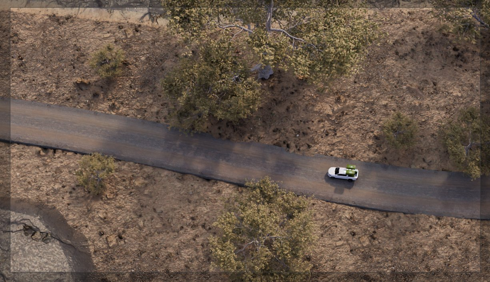

Học Blender qua nhật ký sản xuất phim OVERGROWN

Học Blender qua nhật ký sản xuất nghĩa là xem lại ghi chép của một ê-kíp làm phim thật thay vì xem tutorial. Blender Studio đã mở kho hậu trường của phim hoạt hình OVERGROWN theo dạng này, gồm nhiều nhật ký trải khắp pipeline. Bài này nói rõ nên xem khâu nào trước, cách bóc một shot ra để học, và khi nào cách học này chưa hợp với bạn.
Trước khi đi tiếp, một lưu ý về thời hạn. Đợt mở miễn phí của Blender Studio có giới hạn thời gian, nên trạng thái truy cập lúc bạn đọc bài này có thể đã khác. Vào thẳng trang dự án trên studio.blender.org để kiểm tra. Phần phương pháp bên dưới vẫn dùng được cho bất kỳ nhật ký sản xuất nào khác.
Nhật ký sản xuất là gì
Nhật ký sản xuất là ghi chép trong lúc làm, không phải bài dạy viết sau khi xong. Người viết chưa biết kết quả cuối sẽ ra sao, nên họ ghi cả phương án bị loại, chỗ phải làm lại, và lý do cắt gọt vì hết thời gian.
Đó là khác biệt lớn nhất so với video hướng dẫn. Tutorial được dựng ngược: người dạy đã biết đích, rồi quay lại đi từng bước cho mượt. Bạn xem xong thấy mọi quyết định đều hiển nhiên, và dễ tưởng nghề này là chuỗi bước đúng nối nhau.
Xem tutorial dạy bạn làm được một thứ. Đọc nhật ký sản xuất dạy bạn cách nghĩ khi chưa biết phải làm gì.
Trong kho OVERGROWN có gì
Theo bài giới thiệu của 80 Level, bộ tài liệu gồm sáu nhật ký sản xuất trải khắp pipeline: rigging nhân vật và xử lý lông, casting lồng tiếng, dựng bối cảnh, shading, animation từng shot, phát triển hình ảnh, hiệu ứng nước và giọt nước, ánh sáng, nhạc và compositing cuối. Kèm theo là một masterclass của Simon Thommes về kỹ thuật đổ bóng theo hướng painterly.
Khối lượng đó đủ để bạn xem hai ngày liền rồi không nhớ gì. Nên trước khi mở, hãy chọn trước một khâu. Bảng dưới là cách đối chiếu nhanh giữa khâu bạn đang yếu và phần nên xem.
| Bạn đang kẹt ở | Phần nên xem trước | Thứ nên rút ra |
|---|---|---|
| Hình ra nhưng nhìn phẳng, thiếu không khí | Ánh sáng và compositing | Thứ tự dựng đèn, chỗ nào họ cố tình để tối |
| Vật liệu nhìn như nhựa dù chỉnh nhiều | Shading và masterclass painterly | Cách họ quyết định dừng chỉnh thông số |
| Dựng xong một cảnh là loạn file | Dựng bối cảnh và animation từng shot | Cách chia shot, đặt tên, quản lý phiên bản |
| Làm một mình, không biết thứ tự việc | Phát triển hình ảnh | Khâu nào phải chốt trước khi sang khâu sau |
Nếu bạn chưa biết mình đang kẹt ở đâu để chọn dòng nào trong bảng, bài lộ trình tự học Blender giúp định vị theo từng mốc kỹ năng. Người mới hoàn toàn nên đi qua học đồ hoạ 3D từ con số 0 trước đã, vì xem nhật ký sản xuất khi chưa dựng nổi một khối cơ bản thì chỉ thấy hay mà không rút ra được gì.
Nhật ký sản xuất, tutorial và học kèm khác nhau thế nào
Ba cách học này không thay thế nhau. Chúng giải quyết ba vấn đề khác nhau, và dùng sai thứ tự là lý do phổ biến khiến người tự học chững lại.
| Tutorial | Nhật ký sản xuất | Học kèm | |
|---|---|---|---|
| Dạy được gì | Thao tác cụ thể, nút nào ở đâu | Cách ra quyết định và tổ chức công việc | Sửa đúng lỗi của riêng bạn |
| Hợp với giai đoạn | Tháng đầu, khi chưa thuộc giao diện | Sau khi đã tự dựng xong vài cảnh | Khi đã có bài để đem ra sửa |
| Điểm yếu | Làm theo được nhưng không chuyển sang bài khác được | Không ai chỉ ra bạn đang sai chỗ nào | Tốn tiền, và phụ thuộc vào người dạy |
| Chi phí | Phần lớn miễn phí | Miễn phí hoặc theo đợt mở | Trả phí, ước lượng theo buổi hoặc theo khoá |
Nói thẳng mặt bất lợi của nhật ký sản xuất: nó không có vòng phản hồi. Bạn xem xong, làm theo, và không ai nói cho bạn biết bản của bạn sai ở đâu. Đó đúng là chỗ nó thua hẳn hình thức có người chữa bài, và bài tự học Blender hay học kèm so sánh kỹ hơn hai hướng này theo chi phí và tốc độ.
Bốn bước khai thác một nhật ký sản xuất
Bước 1: chọn một khâu, đừng xem hết
Cám dỗ lớn nhất là mở tất cả rồi lướt. Chọn đúng khâu bạn đang yếu theo bảng ở trên, xem hết khâu đó rồi mới tính tiếp. Một khâu làm tới nơi hơn sáu khâu xem lướt.
Bước 2: dừng lại ở mỗi quyết định, tự trả lời trước
Khi họ nêu vấn đề, bấm dừng. Tự hỏi mình sẽ xử lý thế nào, viết ra một câu. Rồi mới xem tiếp. Chênh lệch giữa câu trả lời của bạn và của họ chính là bài học, phần bạn xem trôi tuột không phải.
Bước 3: chép lại một shot, không phải cả phim
Lấy một shot bạn thích, dựng lại bằng tài sản của riêng bạn. Không cần giống. Cần hiểu vì sao ánh sáng đặt ở đó và vì sao camera dừng lại chỗ đó. Nếu bạn muốn một quy trình có sẵn để bám theo khi chép shot, phần quy trình dựng một shot TVC 3D chia đúng chuỗi việc từ chốt góc máy tới xuất file.
Bước 4: ghi lại ba quyết định, không ghi thao tác
Sau mỗi buổi xem, viết ba dòng: họ đứng trước lựa chọn gì, họ chọn gì, và vì sao. Thao tác bạn sẽ quên trong một tuần. Ba dòng đó thì không, vì lần sau gặp tình huống tương tự bạn sẽ nhớ ra.

Ba trường hợp chưa nên bắt đầu từ nhật ký sản xuất
- Bạn chưa dựng xong cảnh nào của riêng mình. Chưa có trải nghiệm bị kẹt thì xem người khác gỡ kẹt không đọng lại gì. Làm một cảnh nhỏ tới cuối trước đã.
- Bạn đang cần ra bài nộp trong hai tuần. Nhật ký sản xuất là khoản đầu tư dài. Sát hạn thì một quy trình rõ ràng và một người chữa bài có ích hơn.
- Bạn đang yếu phần thao tác cơ bản. Nếu còn loay hoay với modifier và UV, tutorial đúng trọng tâm vẫn hiệu quả hơn. Quay lại nhật ký sau khoảng vài tháng.
Về thời gian, ước lượng theo kinh nghiệm dạy của chúng tôi là sau khoảng ba tới bốn tháng làm bài đều, tức là khi bạn đã tự đi hết một cảnh từ dựng hình tới xuất ảnh. Bài học Blender 3D bao lâu nói kỹ hơn các mốc này.
Phong cách phim và job thương mại là hai bài toán khác nhau
OVERGROWN đi theo hướng stylized, không phải render sản phẩm thương mại. Nếu bạn đang học để làm TVC hay hình ảnh sản phẩm, đừng bê nguyên bảng màu và cách đổ bóng của phim vào job thương mại. Khách hàng sản phẩm thường cần vật liệu đọc đúng chất và logo đọc được ở mọi tỉ lệ, hai ràng buộc mà phim hoạt hình không có.
Cái đáng lấy là cách tổ chức công việc: chia shot ra sao, quản lý phiên bản thế nào, ai quyết cái gì ở khâu nào. Phần đó dùng được cho mọi thể loại, và là phần khó tự nghĩ ra nhất khi làm một mình.
Riêng phần ánh sáng thì nên xem song song với một checklist của chính bạn, vì đây là khâu dễ bắt chước sai nhất. Bài học lighting trong Blender liệt kê năm lỗi khiến render trông rẻ tiền, dùng nó làm thước đo khi đối chiếu với cách ê-kíp họ dựng đèn.
Danh sách kiểm tra sau khi xem xong một khâu
Xem xong mà không làm gì thì coi như chưa xem. Năm mục dưới là mức tối thiểu để buổi xem đó biến thành kỹ năng.
- Viết được ba dòng quyết định theo bước 4, không phải ba dòng thao tác.
- Chép lại một shot bằng tài sản của mình, dù xấu hơn bản gốc.
- Nêu được một thứ trong cách họ làm mà bạn cố ý không áp dụng, kèm lý do.
- Đổi được một thói quen cũ trong file của mình, ví dụ cách đặt tên collection.
- Lên lịch xem khâu tiếp theo, hoặc quyết định dừng và quay lại luyện tay.
Học Blender qua nhật ký sản xuất hợp với giai đoạn nào
Gọn lại: dùng tutorial để qua tháng đầu, dùng nhật ký sản xuất để hiểu cách nghĩ sau khi đã tự dựng được vài cảnh, và dùng người chữa bài khi cần biết chính xác mình sai ở đâu. Học Blender qua nhật ký sản xuất mạnh ở phần giữa, chỗ phần lớn người tự học hay chững lại vì không biết mình đang làm sai cái gì.
Nếu bạn muốn tự thử trước, tải cẩm nang Blender rồi đối chiếu checklist trong đó với cách ê-kíp OVERGROWN xử lý khâu ánh sáng. Còn nếu bạn thấy mình xem nhiều nhưng bài làm ra không khá lên, đó là dấu hiệu thiếu vòng phản hồi chứ không phải thiếu tài liệu, và hai hệ ở trang khoá học 3D Blender đi theo đúng thứ tự kỹ năng nói trong bài.
Hỏi đáp về học Blender qua nhật ký sản xuất
Kho hậu trường OVERGROWN còn miễn phí không?
Đợt mở của Blender Studio có giới hạn thời gian nên trạng thái có thể đã thay đổi. Kiểm tra trực tiếp trên trang dự án ở studio.blender.org trước khi sắp lịch xem. Cách học mô tả trong bài vẫn áp dụng được cho các nhật ký sản xuất khác.
Chưa giỏi tiếng Anh thì xem được không?
Được, nhưng chậm hơn. Phần lớn giá trị nằm ở hình ảnh quá trình và thứ tự công việc, không nằm ở lời nói. Bật phụ đề, xem chậm, và tập trung vào cái họ làm trên màn hình hơn là nghe hết từng câu.
Học Blender qua nhật ký sản xuất có thay được một khoá học không?
Không thay được phần chữa bài. Nhật ký cho bạn cách nghĩ của người có nghề, nhưng không ai nhìn file của bạn và chỉ ra lỗi. Nếu bạn tự đánh giá được bài của mình thì nó đủ, còn nếu chưa thì vẫn cần người sửa.
Nên xem trước phần nào nếu chỉ có một buổi tối?
Xem phần ánh sáng. Đây là khâu tạo khác biệt lớn nhất trên ảnh cuối và cũng là khâu bạn áp dụng lại được ngay trong cảnh đang làm dở, không cần đổi cách dựng hình.
Xem xong thì nên làm bài gì để không quên?
Chép lại đúng một shot trong vòng ba ngày kể từ lúc xem. Để lâu hơn thì phần quyết định sẽ mờ đi và bạn chỉ còn nhớ thao tác, tức là phần ít giá trị nhất.
Bước tiếp theo gọn nhất: chọn một khâu theo bảng đối chiếu ở đầu bài, xem hết khâu đó, rồi chép lại một shot trong ba ngày. Nếu muốn có người xem bản chép đó và nói thẳng nó thiếu gì, xem trước hai hệ đào tạo ở trang khoá học Blender 3D.
Nguồn tham khảo
Bài viết là phân tích và quan điểm riêng của LXAM Studio, dựa trên thông tin từ các nguồn dưới đây. Bấm vào để đọc bản gốc.
- Blender Studio Opens OVERGROWN's Free Behind-the-Scenes Archive (80 Level)
- Blender Studio, trang dự án chính thức
Đọc tiếp


Muốn được sửa bài trực tiếp?
Coaching 1:1 online, đồng hành trọn một năm. Để lại thông tin, tôi xem qua và tư vấn bạn nên bắt đầu từ đâu.
Đăng ký tư vấn